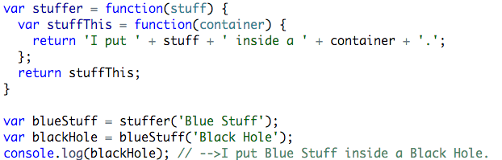

Peace!
My Telegraph cohort starts this Monday, and in light of this exciting event, I want to give back and go over some concepts that are essential to anyone's success at javascript, but especially for those seeking to interview for an upcoming cohort. Next week I'll go into higher-order functions. But for today, I want to get into closures.
So what are closures? Closure Functions are a way of storing values from other functions. A closure function is returned by another function, and keeps access to values stored in the function that returns it.
Huh?
Let me explain...
Suppose we have a function that returns a function. But our function is special. It holds stuff. What stuff? Any stuff! This functions returns a function that takes a container, any container, and puts the stuff, stored as variable in our outer function, and puts it in the container! Like so:
The stuffer function, which takes any stuff as a parameter, returns stuffThis, with the stuff value binded to the string to be returned by stuffThis. stuffThis retains access to the outer functions parameter through something called SCOPE, another important concept. For now, Just remember that a function returned by another can always access the outer function's variables by reference, and that's called a Closure Scope!
So when we save a call stuffer as our blueStuff, we pass 'Black Hole' for a container to put our stuff in!
And voila! We now have a function that returns a function that can keep variables from an outer function. Closures are the most effective way of stroing values from other functions to be re-used. Always remember DRY(don't repeat yourself), and stay tuned - I'll go over some more info on scopes and higher-order functions very soon!!!
Peace!!!
Peace!!!
In two weeks I will be starting Telegraph Academy, a coding bootcamp, a Reactor Core school in Berkeley, CA. I just finished the pre-course work for it, and I am here to tell you: if you are thinking of coming to any one of the Reactor Core schools(Hack Reactor, MakerSquare, Telegraph), then I have something really important to tell you that you should definitely understand: if you are prone to giving up, this is not the place for you.
I am serious. Now, mind you, I am having so much fun... I haven't even started the actual cohort yet and I am already so proud of how far I have come. I went from having an such a basic understanding of programming 4 months ago, to just having built my first actual application with HTML/CSS3/jQuery(it's an incredibly simple one, but it's an app!). I have bathed in the light of functional programming; I have wrestled with recursion in many forms; I even had some bouts with HTML(don't underetimate its power). And I still have SO much to learn, three whole months worth! FUN!!!
But guess what?!
It's hard. Really hard.
In fact, it doesnt get easier, it gets HARDER.
I know, I know, is there any light at the tunnel? The answer is: ONLY if you are willing to put in HARD work. I interviewed twice to get into Telegraph, and on the first time I remember what my interviewer said when I asked him the general, "What do you think of the program". He responded, "It's one of those things where you get what you put into it". This man wasn't lyin'! But I am already being rewarded in so many ways, more than I am going to be able to list here in on blog post.
There is so much I want to talk about with you all, so I will be making sure to be back at least once a week to fill you in on my progress with Telegraph. I'll be discussing topics on programming and javscript, technology, the Telegraph experience.
I know some of my audience are prospects of Telegraph or Reactor Core, and since I KNOW how hard it is to get ready for technical interviews, I'll be going over some concepts that are paramount to passing that interview!
Thanks for reading! Peace!